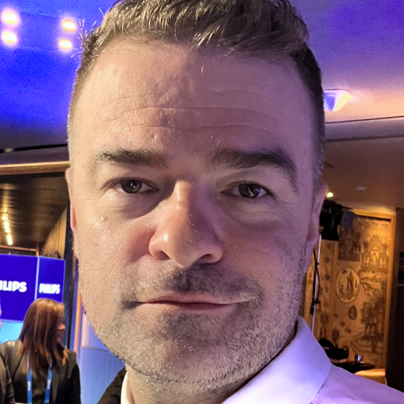

Ivan Shevtsoff – Your Certified Russian & German Legal Interpreter
20+ years’ experience as a certified interpreter for hearings, remote depositions, and international arbitration. Urgent same-day availability for your remote legal proceedings.
Flawless English, Russian, and German interpretation you can trust.
Stop searching. Find a certified legal interpreter for Russian and German right here.
Why Hire Ivan as Your Legal Interpreter?
On-Demand Service: Need an interpreter on short notice? I offer same-day availability for urgent depositions, hearings, and client meetings via secure remote platforms.
Two Decades of Excellence: Over 20 years of proven experience interpreting in high-stakes legal matters, including complex commercial litigation and international arbitration.
Legal Terminology Mastery: As an expert legal linguist, I ensure precise command of English, Russian, and German legal terminology. Nothing gets lost in translation.
Absolute Confidentiality: Your case's sensitive information is 100% secure. I adhere to strict NDA policies and the highest standards of professional ethics.
Reliable & Tech-Ready: Crystal-clear interpretation delivered via a professional audio/video setup. I eliminate tech hiccups so you can focus on your case.
Expert Interpreting for a Range of Legal Contexts
Ivan Shevtsoff provides both simultaneous and consecutive interpreting for law firms and corporate clients in the USA, UK, and worldwide:
Litigation Support: Find a remote interpreter for depositions, trials, hearings, and witness preparation sessions (civil and criminal).
International Arbitration: Hire a Russian or German interpreter for ICC, LCIA, and other arbitration forums to ensure complete clarity.
Regulatory Investigations: High-stakes interpreting for interviews with agencies like the SEC, DOJ, FCA, and SFO.
Corporate & Commercial Law: M&A due diligence, complex contract negotiations, and board meetings requiring precise bilingual communication.
Immigration & Family Law: Culturally sensitive and accurate interpreting for immigration interviews, asylum hearings, and family court cases.
My Professional Standards & Approach
Meticulous Preparation: I thoroughly prepare for every assignment, studying case documents and specific terminology to interpret with unmatched precision from the start.
Cultural Competence: Beyond word-for-word translation, I convey critical tone and intent, bridging cultural nuances to ensure true understanding between all parties.
Platform Agnostic: Expert remote interpreting via Zoom, Microsoft Teams, Webex, or your firm's preferred platform. My setup includes a high-quality headset and redundant internet for uninterrupted service.
Ethical & Neutral Facilitator: As a certified interpreter, I strictly follow the code of ethics, ensuring complete neutrality and accuracy. I manage the language barrier so **you can focus on winning your case.**
* Member of the ATA, CIOL, UTR. Certified interpreter for US Federal & State courts. Your trusted partner for legal interpreting. *
What Our Clients Say
“Ivan is our go-to Russian interpreter for critical hearings. His grasp of complex legal terminology is remarkable, and he’s incredibly reliable, even on short notice.”
– Mike R., Solicitor, New York, USA
“Hiring Ivan for a remote deposition was seamless. He provides precise, clear translation to the highest standard. I recommend him without hesitation.”
– Robert Z., Litigation Partner, New York, USA
Solve Your Language Barrier Today
When you hire Ivan Shevtsoff, you’re not just getting an interpreter; you're securing a seasoned professional dedicated to the success of your case. **Your search for a reliable interpreter ends here.**
Contact me now via WhatsApp or Email to book a certified interpreter and ensure your next legal proceeding is a success: